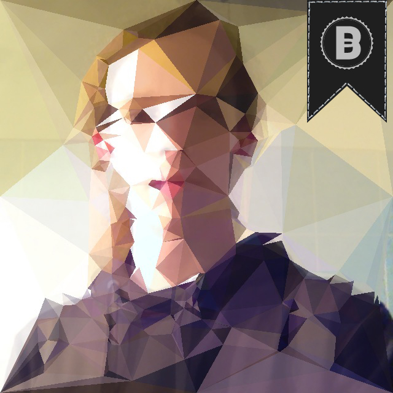

botta péter

#html5 #css3 #mobiefirst #smashing #clean #fancy és a többi kulcsszó, mind mind fontos szerepet tölt be a szakmai pályafutásom elején (és persze a továbbiakban is ezekre koncentrálok). 2011 óta vagyok a SZÁMALK tanulója, jelenleg utolsó éves vagyok, és nagyon megtetszett ez a szakma. Szeretem a kihívásokat, szép és letisztult weboldalakat tervezni és megépíteni. Egyéb információ eléréséhez alább találhatóak a közösségi színterek, ahol elő-elő fordulok.